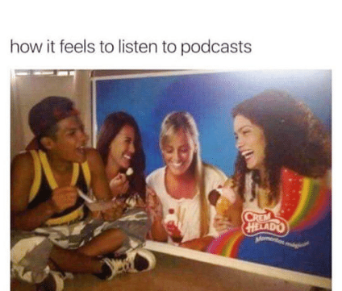

Make Your Show Stand Out
There are so many podcasts these days–over 2 million podcasts and almost 50 million episodes, according Podcast Insights in December 2021. In this saturated field, how will your show find (and keep) its audience?
Finding a keeping an audience is hard work. Outreach and promotion don’t happen overnight. In this section, we’ll discuss paid and unpaid outreach strategies, plus broader ways to envision your relationship with your listeners.
Paid and Unpaid Outreach Strategies
Below is a chart breaking down some of the ways you can promote your show, whether you have a budget or not:
![Two column chart with headings Paid Options and Unpaid options. Paid option rows read: Buy ad space on a podcast that already reaches your targeted audience, Sponsor social media posts by influencers associated with your podcast’s topic; sponsor articles on relevant blogs or websites, Run a giveaway contest with an outreach component. Unpaid option rows read: Calls to action during each episode; urge listeners to rate, review, and tell friends about the show, Social media promotion, Research how other podcasts handle social media and create a strategy for your feed/s, Integrate appropriate hashtags, Promptly respond to comments, Experiment with different kinds of content and use analytics to optimize future posts, Post about your show on similar podcasts’ Facebook community pages, Interact with bigger, similar shows on social media, Reach out to relevant blogs/publications and request reviews of your show, Invite guests who can share on their networks; offer to act as a guest on podcast with overlapping audience](assets/img/OutreachChart.png)
Each point in the graph above could be expanded, but here are some top tips:
- Paid ads on popular podcasts can cost thousands of dollars depending on the show’s prominence and reach
- It’s better to do one social media platform well than to erratically post on six platforms; quality over quantity is key
- Many podcasts find a community hub on private Facebook groups rather than Facebook pages or comments sections on Instagram or Twitter posts; because of this, a Facebook group may be a good place to focus your social media energy
- Another option is to build a website for your show so that you can leverage the power of SEO; however, note that effectively running a website or blog takes time
- Community > Competition. Similar shows are your friends, not your foes. Try to make genuine connections with your peers.
Using the Resources at the University
McMaster has a robust team of communications professionals working on increasing the visibility of the university’s work. If your podcast builds on your research or is somehow involved with your role at McMaster University, use this network to your advantage.
Contact the person who handles communications in your department.
- If your department has a social media account, ask them to create a post.
- If your department has a newsletter, ask them to feature the podcast in an issue.
- If your department has a mailing list, write an announcement and ask them to forward it or forward it yourself if you have access to the list.
You can also organize a panel or event announcing the podcast and discussing the process.
Request an article for the most appropriate arm of the McMaster Daily News; individual departments may not have this capacity, but Humanities, Social Science, and Science at large do.
Back to Basics
However, the chart above is only 30% of the outreach pie. Around 70% of podcast listeners don’t find shows through ads or social media. They find them through recommendations from friends, family, colleagues
So how do you get people to recommend your show? It’s simple. You create interesting and engaging material. You release it on schedule. You create a relationship with your listener.

This meme is silly but true. A good podcast will make a listener feel like they have a connection with you, that they enjoy spending time with you. You can cultivate this kind of relationship by treating your listener with respect. Of course, this means trying your best to produce great, interesting content. If you say that you’ll release new episodes on a weekly basis, do so. Consistency is key to the listener/podcaster relationship; it builds the show into your listeners’ weekly routines.